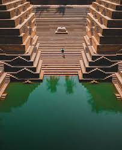
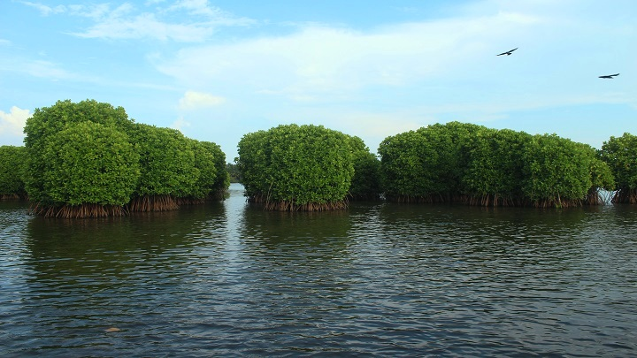

KANNUR LIGHTHOUSE

PERALASSERY TEMBLE

Kannur, a coastal district located in the picturesque state of Kerala, India, is a place where history, culture, and natural beauty seamlessly blend. Nestled along the Arabian Sea, Kannur is known for its pristine beaches, lush green hills, and a rich heritage dating back centuries. This enchanting region is steeped in history, with remnants of Portuguese, Dutch, and British colonial influences, reflected in landmarks like the St. Angelo Fort and historic churches. Kannur is also famous for its thriving handloom industry, producing exquisite traditional fabrics that are a testament to the region's artistic heritage. With its unique blend of historical charm and scenic beauty, Kannur offers visitors an opportunity to explore the best of Kerala's coastal culture while enjoying the tranquility of its beaches, the grandeur of its forts, and the warmth of its people.